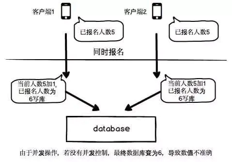

最近做到条件竞争的题目，突然想起来以前搞项目的时候，老师也和我科普过这个。果然当初太单纯了哈哈哈哈。总觉得一起就一起，肯定能处理~
为什么需要乐观锁与悲观锁
如果10个人同时查看一个共有的数据。他们取来的值是固定的。但是如果他们同时修改那个值，比如说同时添加或者个别添加，个别删减。就会影响数据的一致性！
比如说1 | 转账： |
2 | 1、b给a账号转账100元 |
3 | 2、a给b账号转账100元 |
4 | 如果两者同时发生，又没有锁的情况下，就会导致数据的不一致。 |

乐观并发控制
原理
在关系数据库管理系统里，乐观并发控制（又名“乐观锁”，Optimistic Concurrency Control，缩写“OCC”）是一种并发控制的方法。它假设多用户并发的事务在处理时不会彼此互相影响，各事务能够在不产生锁的情况下处理各自影响的那部分数据。在提交数据更新之前，每个事务会先检查在该事务读取数据后，有没有其他事务又修改了该数据。如果其他事务有更新的话，正在提交的事务会进行回滚。
简单来说乐观锁就是，相信你平常处理的事务中几乎遇不到高并发的情况，冲突较少。如果一旦发生了冲突，就只能有一个人改动数据
实现
可以利用版本号或者时间来实现，比如说每次插入的时候,对当前的time字段更新为当前的时间。再有个人插入的时候如果当时取出来的时间小于现在数据表里的时间，则返回数据失效，让用户重新填写，或者其他选择。否则进行插入。
1 | update shop |
2 | set numi |
3 | where id= "当前要更改的商品id" and version < "当前商品版本" |
概括下就是：每条数据一次只能由一个人操作，不能同时被多个人进行操作。
悲观并发控制
原理
在关系数据库管理系统里，悲观并发控制（又名“悲观锁”，Pessimistic Concurrency Control，缩写“PCC”）是一种并发控制的方法。它可以阻止一个事务以影响其他用户的方式来修改数据。如果一个事务执行的操作读某行数据应用了锁，那只有当这个事务把锁释放，其他事务才能够执行与该锁冲突的操作。
实现
注：要使用悲观锁，我们必须关闭mysql数据库的自动提交属性，因为MySQL默认使用autocommit模式，也就是说，当你执行一个更新操作后，MySQL会立刻将结果进行提交。默认autocommit=1; 必须要将值改为0。
当autocommit==1时(自动)
1 | 用户在当前情况下未执行start transaction命令,默认用户对数据库的操作为孤立的事务，用户的操作不会被锁定，即时提交 => 即时修改(每个用户的操作都是一个独立的完整事务周期) |
当autocommit==0时(手动)
1 | 当用户执行start transaction命令(事务初始化)，直到用户执行commit命令(提交)，为一个完整的周期，如果不执行commit命令，则系统默认事务回滚。 |
2 | 在手动模式下，一个事务结束的标志为提交事务或者撤销事务。 |
事务的开始
begin或 start transaction 都是显式开启一个事务；
事务的提交
commit 或 commit work 都是等价的；
事务回滚
rollback 或 rollback work 也是等价的；
1 | begin; |
2 | |
3 | select * from shop where goodsid = "货品id" for update |
4 | |
5 | ## for update是一种排它锁 |
6 | ## 使用后该用户可以查询也可以更新被加锁的数据行。其它用户只能查询但不能更新被加锁的数据行。 |
7 | ## 其他事务必须等本次事务提交后才能执行 |
8 | |
9 | update shop set goods_n="123" |
10 | where goodsid="货品id" |
11 | |
12 | commit; |